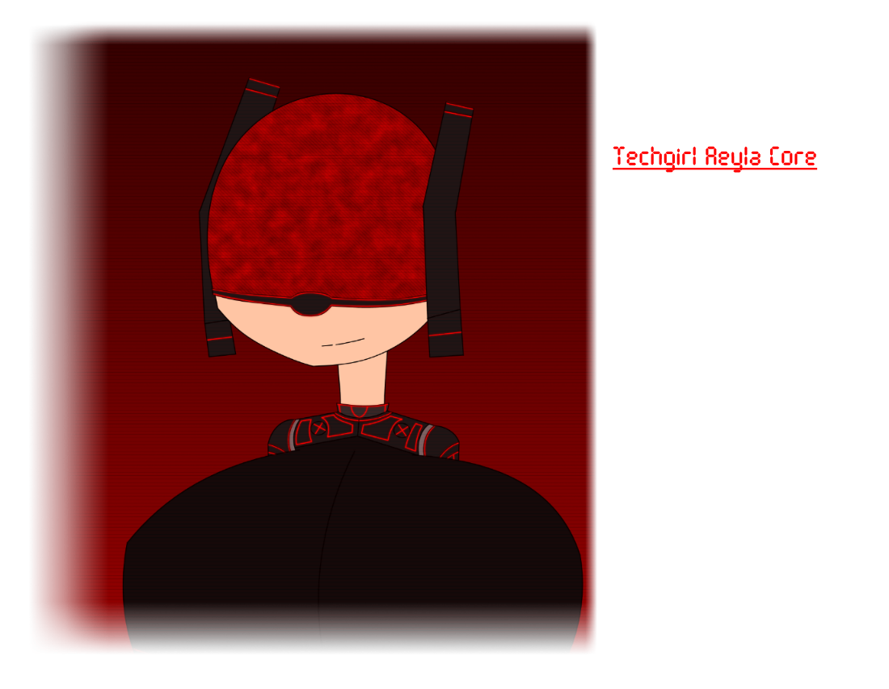

Aeyla Core is the name of Techgirl Unit-90. She was redesigned from an organic human to a male fantasy.
I don't know what I was thinking when I made Aeyla. She was based of an idea both her and Ricochet shared and has the more similar design to the influence. Aeyla is a babe and not shy either. She's the opposit of Ricochet when it goes to males. Aeyla would squeeze her breasts and ass towards men and give them a reason to fantasize more. Mostly fantasize of her alone. She's of the bad girl type. She's even more willing to lay people and also drinks a lot without getting drunk thanks to her cybernetic enhancements.
One time she had a room mate named Steven. Probably the Aeyla version of Jeff (Ricochet's house lord) but not scared and are an Australian. Aeyla would mess around with him but knows better than to ask him for sex. Aeyla gave herself her last name. Core as in she's the core.
Go back to the main page